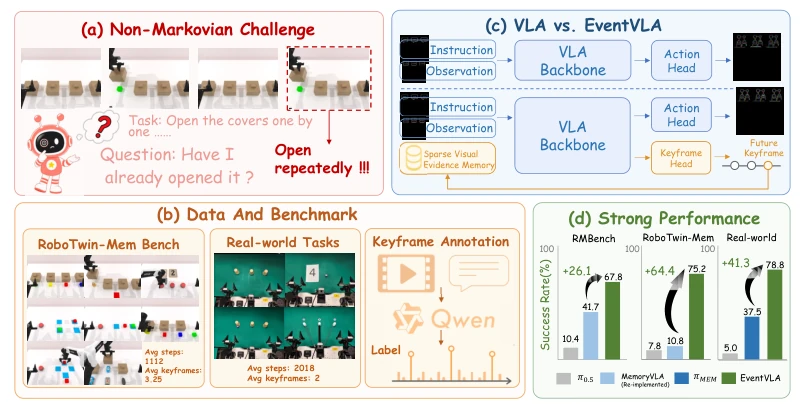
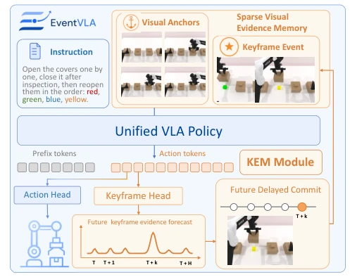
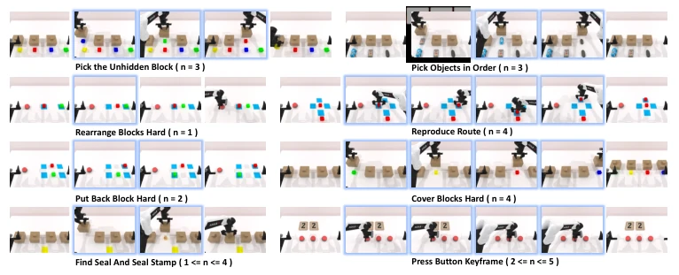
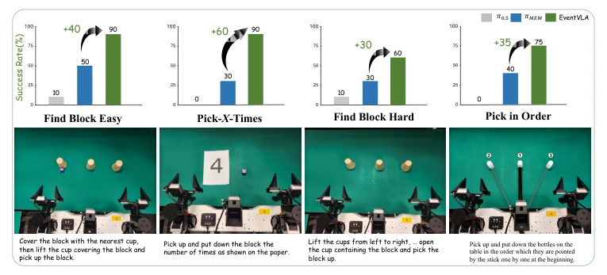
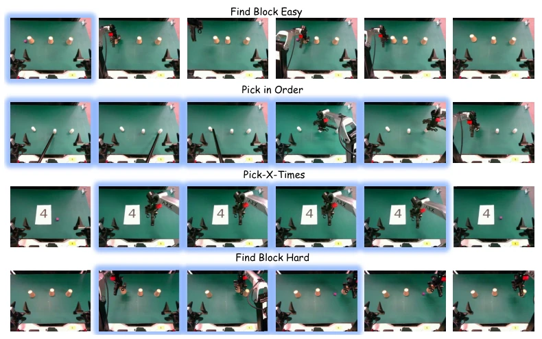
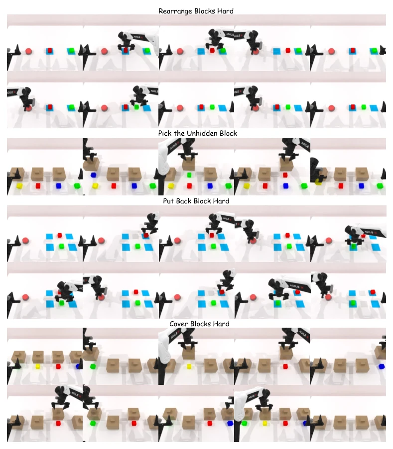
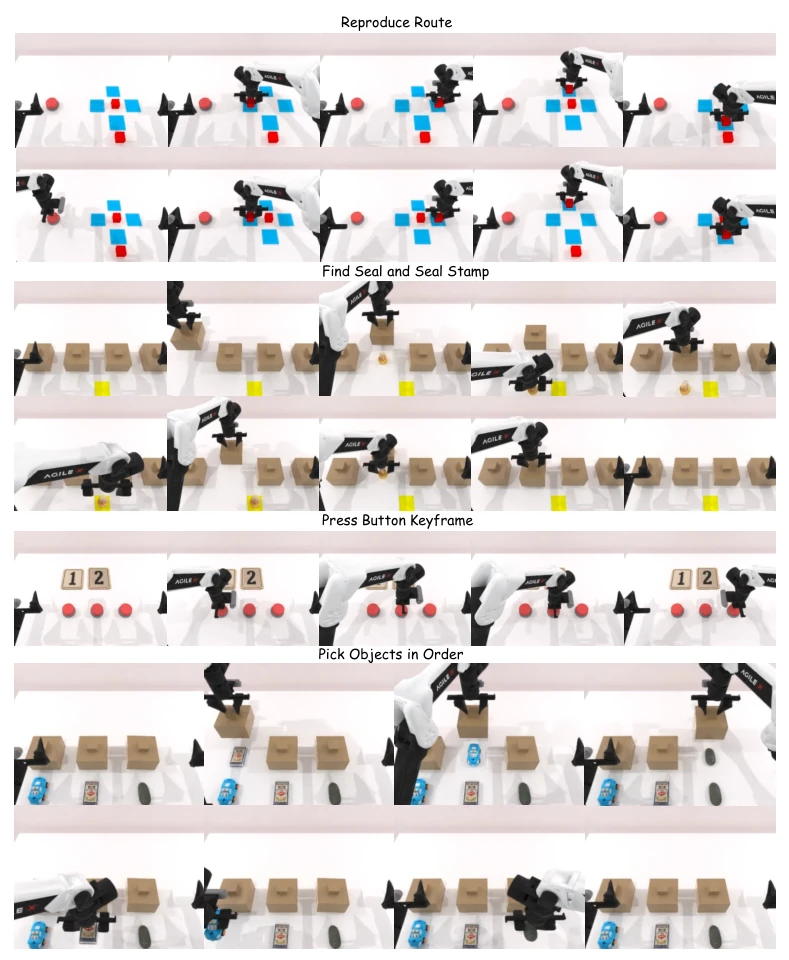
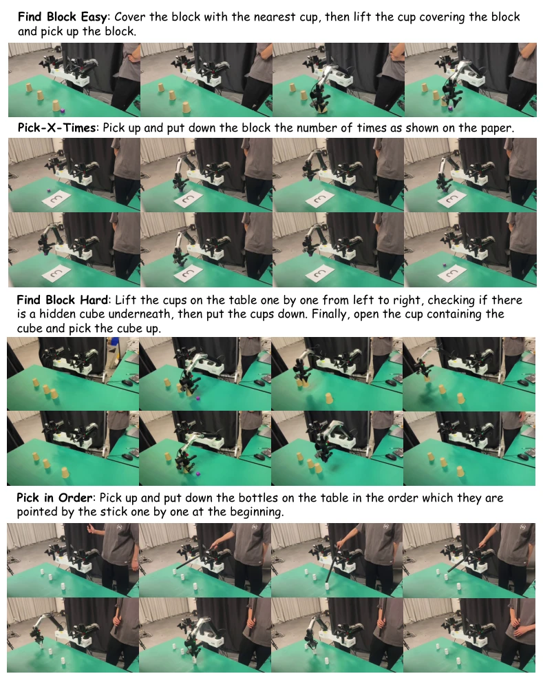

This paper equips long-horizon operations with a "memory extension," but this time it is not about stacking data, but rather implementing "event-driven" mechanisms. The core of EventVLA lies in the KEM module, which acts like a prophet to predict in advance which frames are worth storing, rather than blindly caching like traditional Buffers. Although it solves the non-Markovian problem, the fixed-size buffer pool remains a potential hazard in ultra-long-horizon tasks, as after all, if a robot works for ten minutes, memory might run out. However, the 75% success rate achieved on both simulation and real hardware is indeed significantly better than VLA models that only "see-and-do" reactively, serving as a new prescription for the short-term memory bottleneck in embodied intelligence, although long-term memory still relies on hierarchical architectures to supplement. This work demonstrates that sparse memory is more effective than dense caching, but also exposes the fundamental shortcomings of current VLAs in long-horizon temporal reasoning.
Existing VLA strategies mostly assume information is always visible (the Markov assumption); once key objects are occluded or disappear after briefly appearing, the strategy "loses track". Existing memory-enhancement methods each have significant drawbacks: dual-system architectures (e.g., MemER [7], Mem-0 [8]) suffer from high inference latency and error propagation; recurrent architectures (e.g., [10, 11]) compress history leading to information bottlenecks; ordinary Memory Buffers (e.g., [12, 13]) blindly accumulate redundant frames, drowning out key evidence. What robots need is "selective memory," i.e., knowing when to store and what to store, rather than simply stacking history. This directly determines the success rate of long-horizon tasks, especially in interactive scenarios involving intermediate state tracking. If unable to effectively handle non-Markovian environments, the generalization capability of embodied intelligence in real-world complex tasks will be significantly compromised.

Figure 1: Overview of EventVLA. EventVLA tackles long-horizon, memory-requiring manipulation tasks by storing sparse, task-critical visual evidence. The figure illustrates the (a) non-Markovian challenge, (b) our proposed and evaluated benchmarks, (c) event-driven memory design, and (d) strong gains across simulation and real-world tasks.
EventVLA adopts an end-to-end framework, where the memory module consists of two parts: basic visual anchors (initial frame + short-term sliding window) and dynamic keyframe evidence memory (KEM). KEM is the core innovation; it serves as a parallel prediction head for the VLA, directly predicting the probability of keyframes within the future execution window from Transformer hidden states. This "prospective" mechanism allows the policy to plan memory writes before events occur, avoiding information loss. During training, Qwen3-VL [15] is utilized to automatically annotate keyframe timestamps, and soft labels are used to smooth temporal ambiguity. During inference, 1D NMS and a time cooling mechanism are combined to ensure memory is sparse and redundant-free. Finally, anchors, historical events, and current observations are concatenated and input into the VLM to achieve spatio-temporal association. This design balances computational efficiency with memory capacity, avoiding the information bottleneck of traditional methods.

Figure 2: EventVLA framework. EventVLA maintains a sparse visual evidence memory composed of foundational visual anchors and interaction-driven event keyframes, and uses the KEM module to proactively commit task-critical future key observations into memory.

Figure 3: Overview of the 8 evaluation tasks in the RoboTwin-MeM benchmark. To rigorously evaluate the capacity for intermediate visual evidence retention, each task is explicitly parameterized by n (ranges from 1 to 5), denoting the exact number of transient, interaction-driven keyframes that must be memorized to succeed. These task-critical intermediate events are highlighted with blue borders.
On RMBench [8], using only visual anchors achieved 67.8% SOTA. The authors propose the RoboTwin-MeM benchmark, specifically designed to test intermediate state memory, where EventVLA achieved 75.2%, far exceeding MemoryVLA [12]'s 10.8%. On the real-world ARX ACONE robot, facing occlusion and counting tasks, EventVLA achieved a success rate of up to 90%, while π0.5 [1] almost completely failed. Ablation experiments prove KEM is indispensable; performance plummets after its removal. Additionally, NMS and buffer pool size management significantly impact performance, proving the effectiveness of the sparse strategy. The experiments covered 17 simulation tasks and 4 real-world tasks, verifying the robustness of the method.

Figure 4: Real-world experimental setups and results on the ARX ACONE bimanual robot. We evaluate four memory-intensive manipulation tasks: Find Block Easy, Find Block Hard, Pick-X-Times, and Pick in Order.
其他图片Other Figures

Figure 5: Expanded real-world execution sequences of EventVLA across the four manipulation tasks. The specific task-critical intermediate keyframes, which the policy autonomously captures and commits to memory, are highlighted with blue borders.

Figure 6: Qualitative rollouts of EventVLA on four RoboTwin-MeM simulation tasks: Rearrange Blocks Hard, Pick the Unhidden Block, Put Back Block Hard, and Cover Blocks Hard.

Figure 7: Qualitative rollouts of EventVLA on the remaining four RoboTwin-MeM simulation tasks: Press Button Keyframe, Pick Objects in Order, Find Seal and Seal Stamp, and Reproduce Route.

Figure 8: Qualitative real-world robot execution sequences of EventVLA on four tasks: Find Block Easy, Find Block Hard, Pick-X-Times, and Pick in Order.